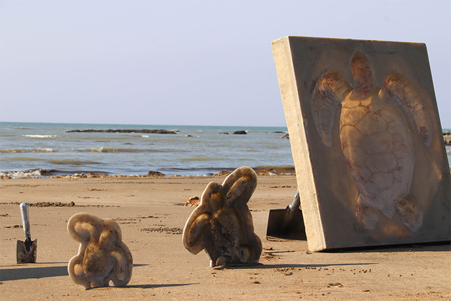
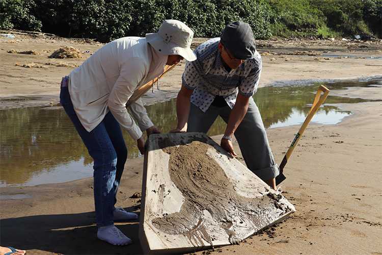
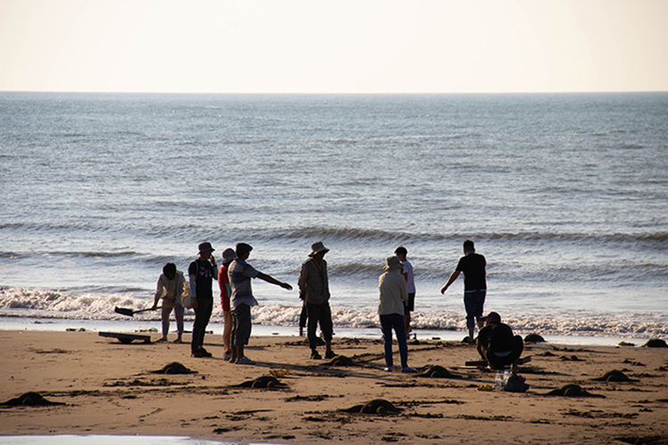
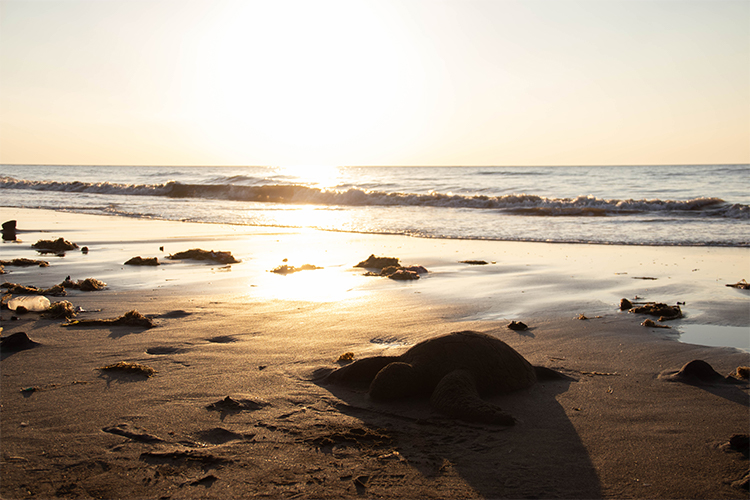

【記者林易寬新北報導】金黃色的陽光灑下，一群人拿著鏟子將泥沙填入模具，倒蓋在沙灘上，隨著海浪不斷拍打，海龜們就此回到洲子灣。《環境藝術：海龜海歸1980》13日在淡水洲子灣舉行，由藝術家王毓淞帶領民眾進行參與式藝術創作，希望讓民眾反思對海洋環境的破壞，提倡海洋生態保護，並和海洋有更多接觸。

王毓淞製作的三種不同尺寸海龜在沙灘上一字排開，提供不同年齡的參加者選擇符合自己體力條件的模具。圖／林易寬攝
王毓淞準備各種大小的模具，讓民眾自由選擇尺寸，在沙灘上製作海龜群像，有人選擇單獨做小海龜，也有人同心協力做大隻的海龜，一起復刻海龜上岸的盛況。之所以選擇製作海龜，王毓淞說：「玩沙雖然帶給小朋友快樂記憶，但同時也是一種對其他生物的襲奪，因為它往往會干擾到生物的棲地。」在將想法轉化後，翻沙玩具變成王毓淞對自己情感記憶和對誤傷生命的召喚。

王毓淞在示範時，和民眾一起完成最大的海龜；小海龜則是面向海洋，代表對小海龜回到海洋成長茁壯的期望。圖／林易寬攝
活動除了讓民眾親近海洋外，也想引領民眾審視人類與海洋的關係。本次主辦方之一的公司田溪水環境巡守隊成員Grace（化名）提到，當初設計活動時，希望以互動式內容吸引民眾目光，讓更多人親近海洋，並進一步思考海岸環境的問題。王毓淞表示藉由製作海龜的過程，及欣賞漲潮後海龜消失的畫面，他想傳達萬物都會回歸大自然，而人們應該在破壞大自然前多多思考。

藝術家除了和參與者共同製作海龜，也帶領他們到海邊感受海浪拍打和海風吹拂。圖／林易寬攝
洲子灣地區過去曾是海水浴場，王毓淞兒時也曾到此遊玩，他回憶道：「小時候這裡很像在逛夜市，然後其他生物在夜市裡交錯混雜著。」但隨著附近人為設施完工，洲子灣因突堤效應影響嚴重退化，海水浴場最終於民國88年關閉，當地海岸生態環境也隨著更多人類活動而惡化。近年政府實施一連串解決方案，新北市環保局環境衛生管理科科員吳小姐（化名）說明，政府每年在春、秋兩季都會舉辦淨灘活動，給企業和民眾參與海岸環境維護的機會。除此之外也有沙灘領養計畫，中央同時規劃一筆經費供地方海岸巡守隊使用。本次活動的主辦人之一梁先生（化名）表示在沙灘保護部分，需要以大型工程解決，所以民間能做的比較少，但淨灘類的活動都會不定期舉辦。

夕陽出現時恰逢漲潮，在潮汐作用下，海龜們逐漸回歸大自然，也為當天活動畫下句點。圖／林易寬攝
這次活動雖然參加人數不多，但年齡分布廣泛，從國小生到退休長輩都到現場體驗。民眾也在活動後反思，參與者陳江河認為造成環境受影響的原因有很多，有些不一定是人為造成，我們不能輕易地將環境變化歸咎於單一原因，只是如果環境產生變化，生在這個環境上的萬物就要共同承擔結果。王毓淞則表示自己最主要是希望有人能到現場感受大自然，對他來說這就已經是在為大自然做出奉獻。